The Soil Game
Left-click a soil property dial to increment it. Right-click a soil property dial to decrement it.
Attribution
Based on Dirty Matters: The Soil Game.
Licensed under Creative Commons license BY-NC-SA 4.0.
 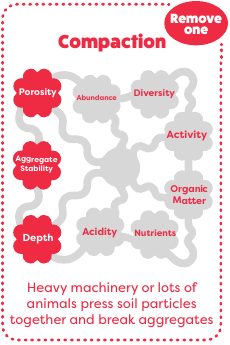
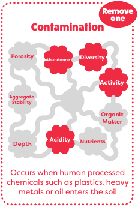
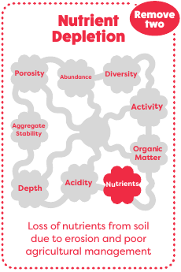
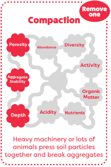
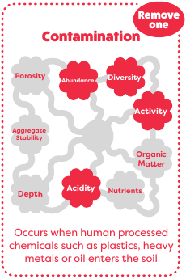
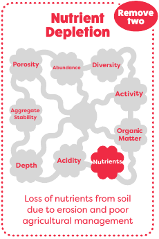
 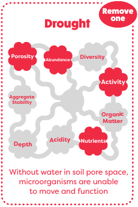
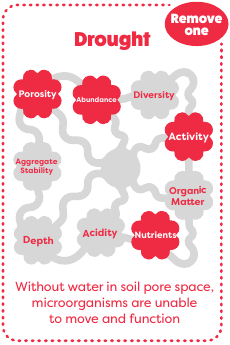

 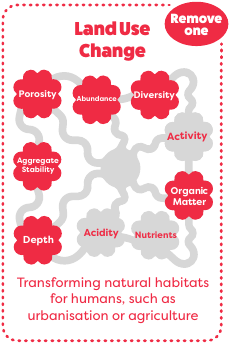
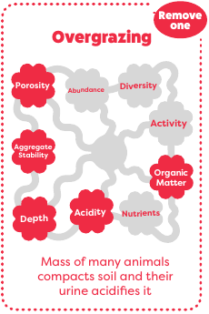
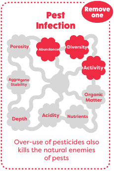
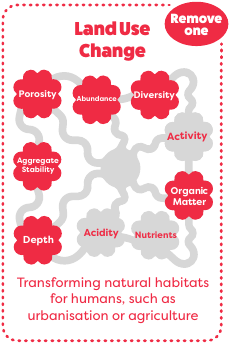
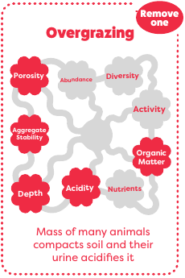
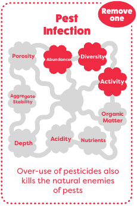
 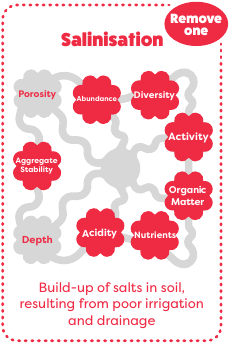
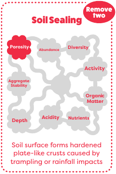
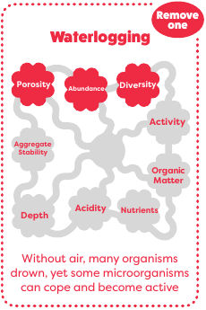
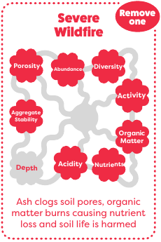
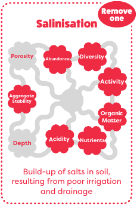
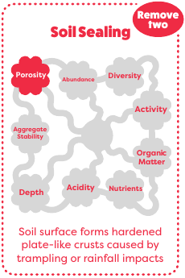
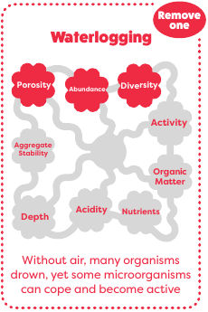
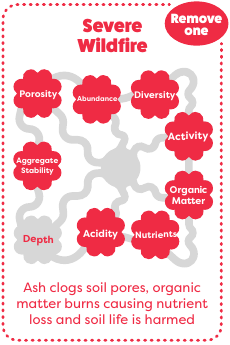
Left-click a soil property dial to increment it. Right-click a soil property dial to decrement it.
Based on Dirty Matters: The Soil Game.
Licensed under Creative Commons license BY-NC-SA 4.0.